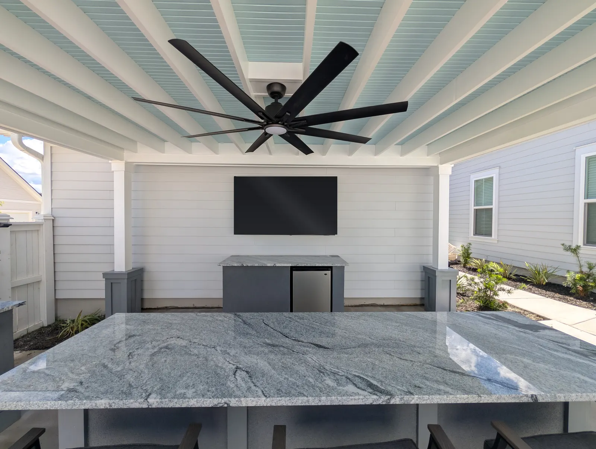
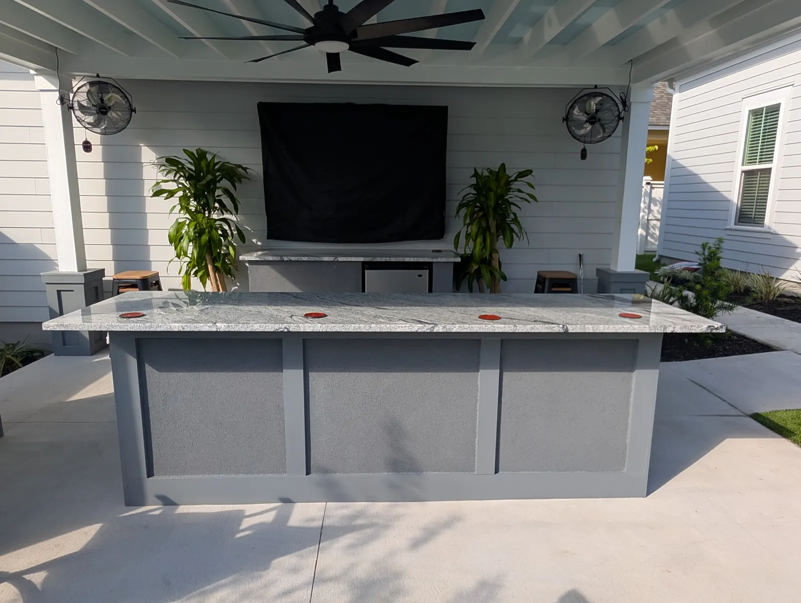
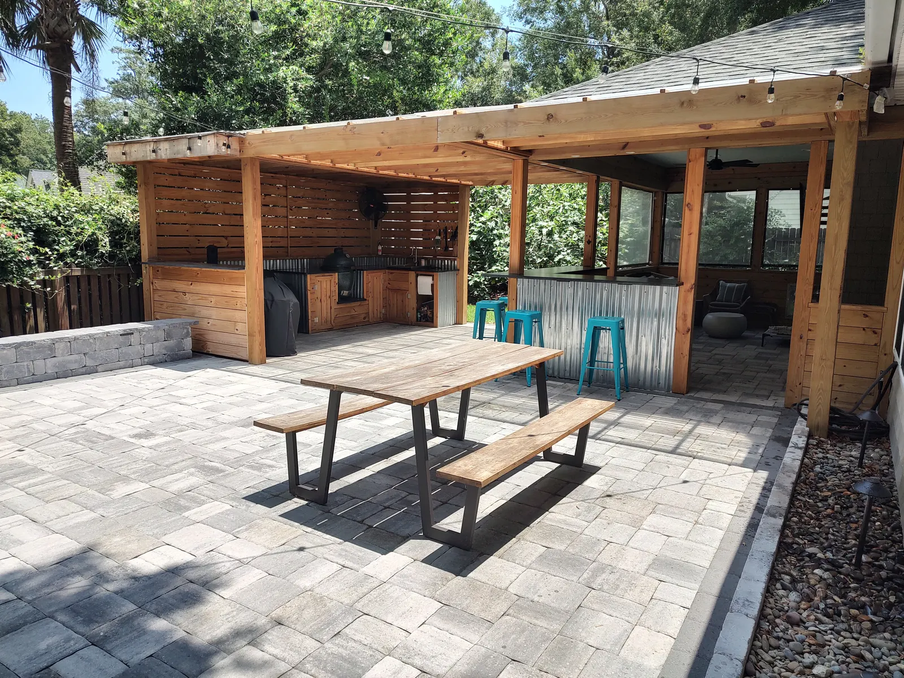
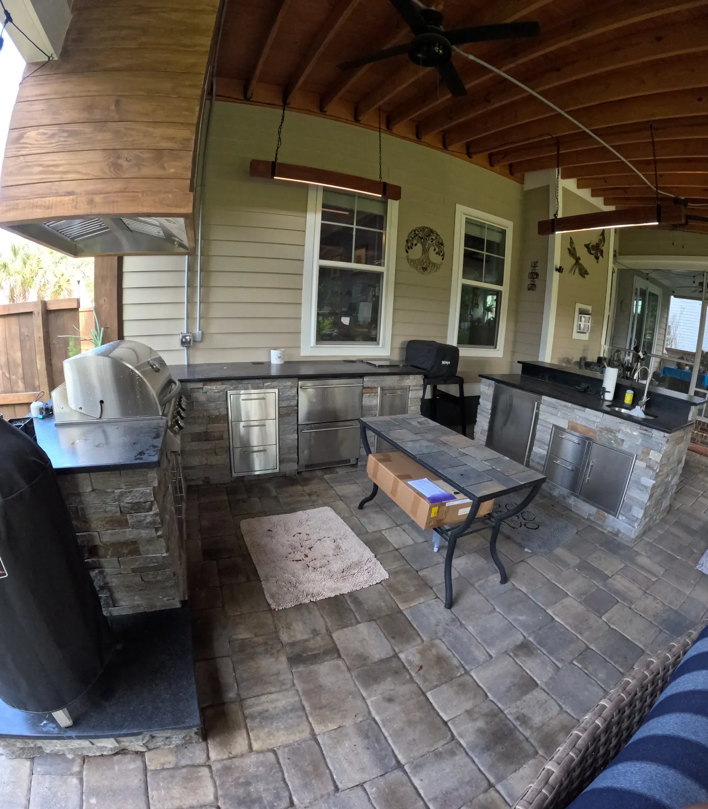

Custom Outdoor Kitchens in Charleston, SC

Designed & Built In-House
Outdoor Kitchens Built for How You Actually Cook and Host
An outdoor kitchen is usually the heart of an outdoor living space. It’s where everyone ends up. We design and build yours from start to finish with our own team, including the gas lines, electrical, plumbing and permits. You won’t need to hire anyone else, and the kitchen is ready to cook on the day we finish.
Doug and Zach Cramer design every kitchen around how you’ll use it, what you want to spend, and the style of your home, so it looks like it belongs there.
Where Most Kitchens Start, and What People Add

The most common kitchen we build is a straight run with a grill, cabinets underneath and a refrigerator. The first things most homeowners want are a grill, a TV, a fridge, a sink and seating for guests.
From there, the most popular additions are:
- A bar top for guests, usually as a separate island, so people can sit and talk with whoever is cooking
- A flat-top griddle for breakfasts and big crowds
- A sink for prep and cleanup
- A pizza oven
- A built-in trash can, which we only recommend if you’ll keep it clean, because it can attract rats
We almost always build a structure overhead, whether a pergola or a pavilion, so the kitchen is protected and usable in any weather.

Materials That Last on the Coast
Granite countertops with stainless steel cabinets are our go-to. They handle salt air, humidity and summer sun, and they’re a good value.
- Wood cabinets give a warmer, rustic look. We’ve built several and they’ve turned out great.
- Concrete countertops are a solid lower-cost option.
For appliances, we usually install Blaze, but you’re welcome to pick out your own. Appliances tend to be the biggest part of a kitchen’s cost, and we don’t add any markup to them.
The Details That Matter Later

A range hood over the grill. When a grill sits under a porch, pergola or pavilion roof, the smoke and grease rise and collect on the ceiling. Over time that means a lot of cleaning, and it can damage the paint. We recommend a range hood whenever the grill is under a roof.
If a hood doesn’t fit the budget, running the ceiling fan and adding a second fan to push the smoke out works well. That’s what we did on the pergola kitchen in Summerville.
Lighting where you cook. Good lighting over the grill and the bar top means the kitchen works just as well after dark.
A Three-Station Kitchen Built for Entertaining

One of our favorite kitchens wraps around in a U shape with three separate stations:
- A grill with its own range hood, plus a Big Green Egg
- Two refrigerators, one with slide-out drawers, a sink and plenty of cabinet storage
- A bar-top seating station with a sapele wood foot rail
- Custom light fixtures hung over one of the work stations and over the bar top
Most kitchens don’t need all of that, but it shows how a kitchen can be designed around the way a family likes to entertain.
What an Outdoor Kitchen Typically Costs
| Outdoor kitchen | $8,000 – $20,000+ |
|---|---|
| Pergola overhead | $10,000 – $30,000 |
| Pavilion overhead | $30,000 – $90,000+ |
Appliances have the biggest effect on the price, and we don’t mark them up. Size, countertop and cabinet materials, and how far the gas, electrical and plumbing need to run also play a part. You’ll get an exact quote once the design is set.
How We Build Yours
- Free consultation at your home, usually within a week of your call. We talk about how you cook and host and what budget you’re comfortable with.
- Budget within about a week.
- Design: drawings, with optional 3D renderings for an additional cost. This takes 1 to 4 weeks depending on complexity. We match the kitchen to your home’s architecture.
- Final quote and permits. Structures need a permit, which takes about 4 to 6 weeks.
- Build. A simple kitchen and pergola takes about a week, and a pavilion 6 to 8 weeks. Gas, electrical and plumbing are all done by our own team.
Kitchens pair naturally with paver patios, fireplaces and fire pits and landscape lighting. We serve Charleston, Mount Pleasant, Summerville, West Ashley, Johns Island and the surrounding Lowcountry.
Frequently Asked Questions
How much does an outdoor kitchen cost?
Most of our outdoor kitchens fall between $8,000 and $20,000+. Appliances are usually the biggest part of the cost, and we don’t add any markup to them. A pergola or pavilion over the kitchen is priced separately.
Can I supply my own grill and appliances?
Yes. We usually install Blaze appliances, but you’re welcome to choose and supply your own.
Do you run the gas, electrical and plumbing?
Yes, all in-house, along with the permits. Your kitchen is ready to cook on the day we finish, with no second contractor to hire.
How long does it take to build?
A simple kitchen with a pergola is built in about a week. If there’s a structure that needs a permit, allow about 4 to 6 weeks for permitting first. Pavilions take 6 to 8 weeks to build.
Is the consultation free?
Yes, anywhere in our main service area around Charleston, Mount Pleasant and Summerville. For farther areas like Bluffton or Kiawah Island, there’s a trip charge.
Do I need a roof over my outdoor kitchen?
We almost always build one. A pergola or pavilion protects the kitchen, gives you shade and a place for fans, lights and a TV, and makes the space usable in the rain.
Should I add a trash can to the cabinets?
Only if you’ll keep it clean. A built-in trash can is convenient, but a dirty one attracts rats, so we talk it through before adding one.
Plan Your Outdoor Kitchen
Tell us how you like to cook and host, and we’ll come out to look at the space, usually within a week.